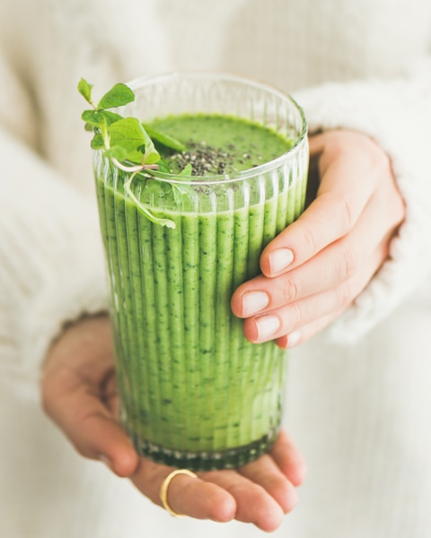
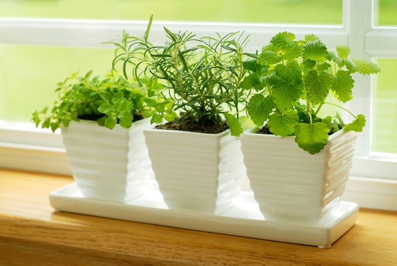
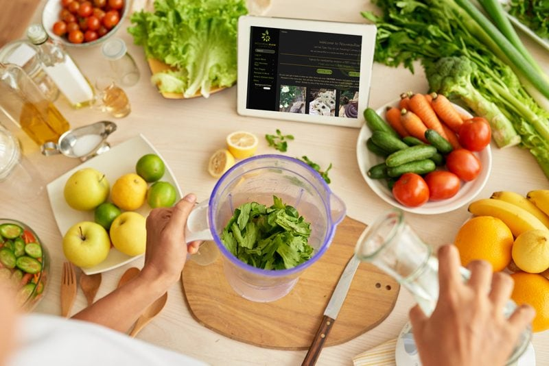

Smoothie Recipe Template

When you blend fruits and vegetables, the cells of the plants break down, and digestibility is improved. BUT even with that, be sure to chew your smoothies. The chewing process starts the release of the saliva in your mouth. The mixture of saliva and your food is where digestion begins. Thoroughly chewing is a very healthy habit to have. It may feel strange at first, but soon it will become an automatic response.
What Smoothies Don’t Have
Green smoothies do not have cholesterol, saturated fat, hydrogenated oils (trans-fats), MSG, GMOs, added hormones, antibiotics, artificial color, artificial flavor, preservatives, nor refined sugar. Do your best to keep it that way.
Designer Smoothies
When you first start making smoothies, you might find yourself using more fruit than veggies, this is normal. For some people, it takes time to build up the palate for greens. I do however encourage you to decrease the fruits and increase the vegetables gradually.
Fruits are often high in sugars, natural ones sure, but I think it’s best to eat natural sugars in moderation. There are ample benefits in recharging your “green batteries,” so make that a goal. One fruit that seems to mask the flavors of greens is the mighty banana! I make smoothies with six cups of spinach, and by adding one banana, I have transformed the taste of my smoothie immensely. IF you don’t care for bananas or can’t eat them for some reason, click (here) to learn about Banana Free Smoothie Options.
Ingredient Template:
- Green leafy vegetable of choice (80% or more)
- Fruit of choice (20% or less if possible)
- One frozen banana or one avocado to emulsify (make creamy)
- Sweeteners
- Superfoods
- Fats
Preparation:
- Wash the vegetables and fruits.
- Pre-cut the vegetables to manageable sizes that your blender can handle.
- When adding flax or chia seeds, soak them in 1 cup of liquid for about 15 minutes in the blender carafe, enough for them to swell up.
- The first thing to add to your blender is the liquid. The moisture will help the greens move more freely when blending.
- Start with 1 cup. After everything is added, feel free to add more if desired.
- The more liquid you add the more watery or runnier the smoothie will be.
- Add the greens. Blend until the greens are broken down.
- Blending in stages prevents chunks.
- Add the frozen or fresh fruit, superfoods, and spices. Blend until smooth.
- I always recommend frozen bananas over fresh. Make a habit out of storing overripe, peeled bananas in the freezer for future smoothies.
- A dash of a high-quality salt will increase the minerals and improve the taste of your smoothie.
- A green smoothie should be perfectly smooth.
- Optional – Add ice.
- Always add the ice last. Otherwise, you may over-blend the ice, and it will make your smoothie watery rather than frosty.
- I usually only add ice if my fruit wasn’t frozen.
Time-Saving Tip:
- Purchase seven green produce bags.
- On Sunday prepare seven smoothie bags (one for each day).
- In each bag place the fruits and veggies that you want to use in each morning smoothie.
- Monday: 3 cups of spinach, 2 carrots, 1 apple.
- Tuesday: 3 cups of kale, 1 cucumber, 1 apple.
- These give you some ideas. You can add dry goods to the smoothie later, such as protein powders, sweeteners, etc. (if desired).
- Come morning, open the fridge and pull out your smoothie goodie bag. Blend, serve, and enjoy!

Examples of possible ingredients:
Green leafy vegetable of choice (80% or more of the total)
- Arugula has a peppery taste and is rich in vitamins A, C, and calcium. Arugula can be eaten raw.
- Collard Greens have a mild flavor and are rich in vitamins A, C, and K, folate, fiber, and calcium.
- Dandelion Greens have a bitter, tangy flavor and are rich in vitamin A and calcium.
- Kale has a slightly bitter, cabbage-like flavor and is rich in vitamins A, C, and K.
- Mustard Greens have a peppery or spicy flavor and are rich in vitamins A, C, and K, folate, and calcium.
- Romaine Lettuce is nutrient-rich lettuce that is high in vitamins A, C, and K and folate.
- Spinach has a sweet flavor and is rich in vitamins A and K, folate, and iron.
- Swiss Chard tastes similar to spinach and is rich in vitamins A, C, and K, potassium, and iron.
Fruit of choice (20% or less of the total)
- Fruits lowest in Sugar: lemon, lime, rhubarb, raspberries, blackberries, cranberries.
- Fruits low to medium in Sugar: strawberries, casaba melon, papaya, watermelon, peaches, nectarines, blueberries, cantaloupes, honeydew melons, apples, guavas, apricots, grapefruit.
- Fruits fairly high in sugar: plums, oranges, kiwi, pears, pineapple.
- Fruits very high in sugar: tangerines, cherries, grapes, pomegranates, mangos, figs, bananas, dried fruits.
Sweeteners – if desired
Fruit
- It is the simplest way to get some sweet flavor into your foods.
- Ripe bananas, in particular, are very sweet and are commonly used in smoothies and blended foods.
- Frozen fruits add great texture to a smoothie.
Lucuma
- It has a maple-like flavor.
- Add to your favorite smoothie for an extra sweet treat.
- Lucuma has a low glycemic index.
Yacon
- It has a maple-like flavor.
- Rich in antioxidants and low in calories.
- Yacon also functions as a prebiotic – stimulating beneficial bacteria in the intestine to help maintain the immune system.
Honey
- It is full of antibacterial properties and high in natural sugar content.
- Not vegan.
Stevia
- It is an excellent herbal alternative to an artificial sweetener.
- It is very sweet with a glycemic index of zero.
- Stevia is most commonly sold as an extract, but can also be obtained as a whole leaf, dried, and ground.
Mesquite Pod Meal
- It is another specialty item which can be used as a sweetener for dehydrated foods, raw desserts, smoothies, etc.
- It is made from the ground-up pods of the mesquite tree and is high in protein and minerals.
- Mesquite pod meal has a strong flavor, so a little goes a long way.
Coconut Secret Coconut Nectar
- When the coconut tree is tapped, it produces a naturally sweet, nutrient-rich ‘sap’ that exudes from the coconut blossoms.
- This sap has a very low glycemic index score and contains 17 amino acids, minerals, vitamin C, broad-spectrum B vitamins, and has a nearly neutral pH.
Superfoods (optional)
Chia seeds
- A good source of insoluble fiber.
- Chia seeds have eight times more omega-3 oils than salmon and are highly stable due to high antioxidant capacity (unlike unstable sources like flax, fish, and hemp).
- They are a complete protein and have 18 amino acids.
- Chia seeds have five times more calcium than milk, three times more iron than spinach, and fifteen times more magnesium than broccoli.
Bee Pollen
- Though not vegan, bee pollen is a fantastic source of nutrients and cannot be synthesized in a laboratory.
- Bee-gathered pollens are rich in proteins, free amino acids, vitamins, including B-complex, and folic acid.
- Bee pollen can have allergenic reactions in people so it must be used with caution.
Dandy Blend
- It is mineral-rich and high in antioxidants.
- Full-bodied flavor and texture of real coffee. Great flavor booster in chocolate-based smoothies.
- Great for liver health.
Hemp seeds
- Hemp seeds contain all the essential amino acids and essential fatty acids necessary to maintain healthy human life.
Goji Berries
- They are a complete protein source, contain 19 different amino acids, 21 trace minerals, are incredibly high in iron, and one of the highest antioxidant foods in the world. Antioxidants protect us from free radicals and counter the creation of cancer cells.
- Goji berries also support the adrenal glands, boost immune function, increase alkalinity, improve eyesight, and much more.
Maca
- It’s a member of the cruciferous family.
- This incredible veggie supports and balances your hormones, heals depression, increases libido, helps the Endocrine system, and provides thyroid support.
- In men, Maca has proven to heal many issues involving the prostate.
Protein Powder
Spirulina
- Contains all eight essential amino acids, rich in vitamins and minerals, chlorophyll, an anti-inflammatory, balances brain chemistry, a blood builder, immune booster, and is high in antioxidants.
- Contains Gamma-Linolenic Acid, which gives us silky soft skin and healthy hair.
Camu Camu
- This berry is known as the Vitamin C Sun King. It contains the world’s highest vitamin C content.
- It also supports immune function, improves eyesight, creates beautiful skin, supports strong collagen, decreases inflammation, reduces stress, and improves lung health.
Aloe Vera
- It is excellent for all types of digestive problems, including Crohn’s Disease, it aids in relieving fungal infections, kills yeast, and is good for weight loss.
- Aloe Vera also reduces inflammation, reduces cancer tumors, normalizes blood sugar, produces white blood cells, promotes healthy kidneys and increases the elasticity of our skin.
There are far too many to list!!!
Fats (optional)
Fats (good fats of course)
- Aid the absorption of our fat soluble Vitamins like K and E (both super important), and also the absorption of minerals. These vitamins and minerals are abundant in greens, so put a little fat in your smoothie and on your greens when eating a salad.
- In a smoothie try coconut flesh, coconut oil/butter, chia seeds, ground flax seeds, ground nuts, hemp seeds, Tahiti, avocado, nut milk, flax oil, avocado, and many others.

Benefits of Blending
- Better absorption. Green leafy vegetables such as lettuce, kale, and spinach are hard to digest when raw. Your blender will start the breakdown process. In doing this, you’ll absorb the lycopene and beta-carotene easily. Be sure to “chew” your smoothies as well. Digestion starts in the mouth as your saliva juices blend with the foods.
- A smoothie uses the whole food, no waste. You will get the juice and all the fibers.
- Smoothies are a great way to eat your vegetables. Especially for kids! Get them involved. Greens are the most alkalizing, mineralizing, and healthiest foods. If getting in your daily veggie and fruit quotas is difficult for you, this is a no-brainer! Not only will you get dense doses of nutrients, but you will also fall in love with them!
- Blending is the quickest and easiest way to prepare large amounts of raw food. They are easy to find and to follow. The Internet is saturated with all sorts of amazing recipes. After a while you won’t have to rely on them, you will learn to listen to your body and recognize what it needs.
- It’s always best to consume your smoothies right after making them, but you can make them ahead of time if need be. I recommend drinking them within 24 hours. It is also best to store them in a mason canning jar, filling as full as you can. You don’t want much air between the lid and drink. Too much air will cause oxidization and lost nutrients.
Let’s Go Shopping
Mid-Range Blender
Green Produce Bags
Sweeteners
Superfood Options
- Chia Seeds, organic 16 oz. Bag
- Dandy Blend, Instant Herbal Beverage with Dandelion
- Hemp hearts Manitoba Harvest Organic
- Goji Berries Raw Organic, 1lb
- Maca Powder, gelatinized or raw
- Protein Powder
- Vanilla – Sunwarrior – Classic Plus, Raw Organic Plant Based Protein, 30 Servings
- Natural – Sunwarrior – Warrior Blend, Raw, Plant-Based, Organic Protein, 30 servings
- Chocolate – Sunwarrior – Warrior Blend, Raw, Plant-Based, Organic Protein, 30 servings
- Spirulina, E3Live Blue Majik
- Camu Camu powder
- Aloe Gel, Lily of The Desert, 16 Fluid Ounce
Nouveauraw.com is a participant in the Amazon Services LLC Associates Program, an affiliate advertising program designed to provide a means for us to earn fees by linking to Amazon.com and affiliated sites – at no extra cost to you.
Thank you for your support! amie sue
Disclaimer
This website is not intended to provide medical advice. All content, including text, graphics, images, and information available on this site is for general informational, entertainment, and educational purposes only. The content is not intended to be a substitute for professional diagnosis or treatment. The author of this site is not responsible for any adverse effects that may occur from the application of the information on this site. You are encouraged to make your own healthcare decisions, based on your research and in partnership with a qualified healthcare professional.
© AmieSue.com